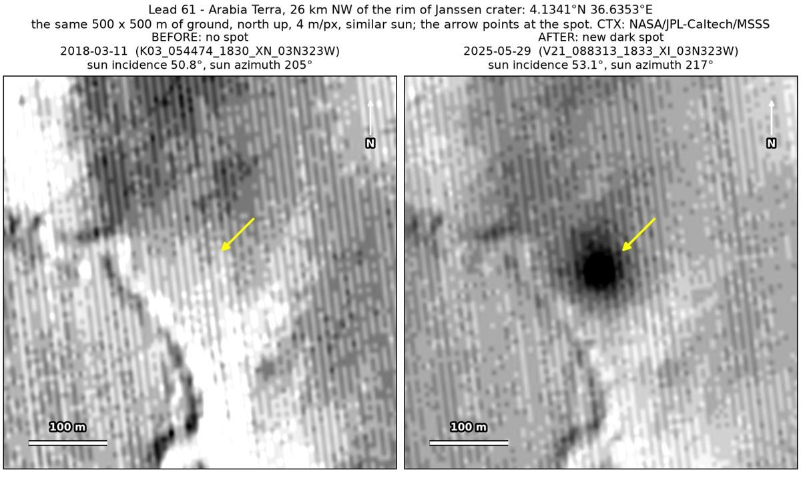
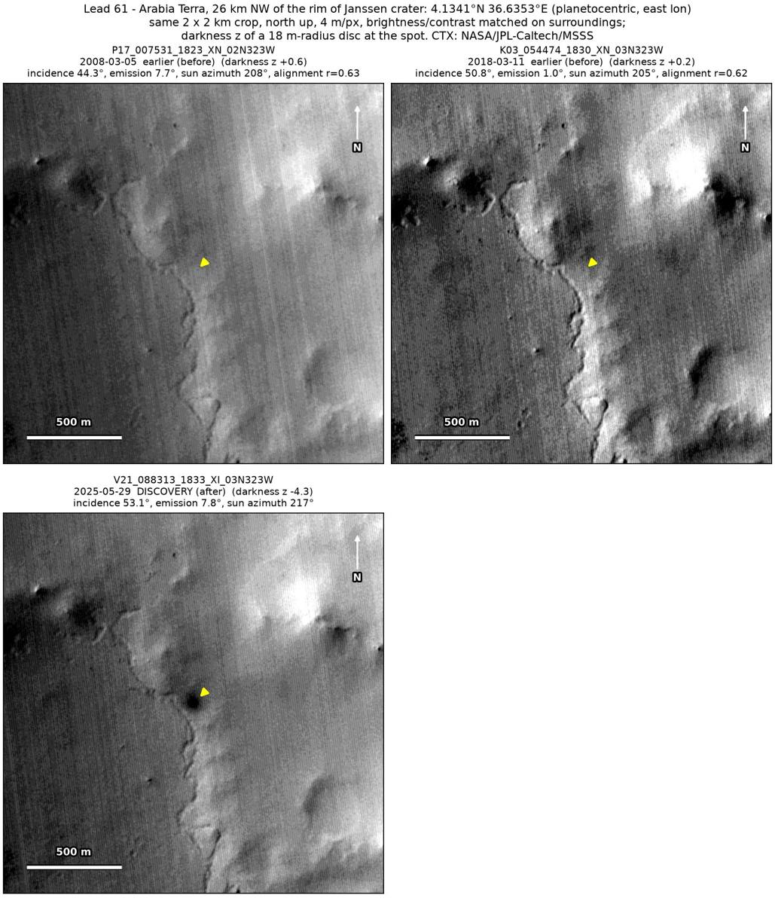
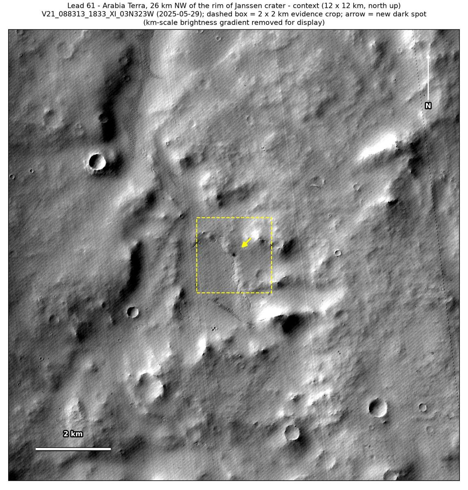

Professor of Mathematics
Paata Ivanisvili
Department of Mathematics, University of California, Irvine

← Possible new impact sites on Mars
Candidate 61: Arabia Terra, 26 km north-west of the rim of Janssen crater
Promising · roughly 60%

What changed. A compact dark spot about 60 m across appeared at the edge of a brighter, rougher area in Arabia Terra, 26 km north-west of the rim of Janssen crater, between March 2018 and May 2025; so far, one CTX image shows it.
Why it may be a new impact. Two earlier images, from March 2008 and March 2018, show nothing there, while a dark feature 225 m to the north shows in both; the March 2018 one was taken under a sun close to that of the May 2025 image. The spot is round rather than a tapering streak, and may be the blast zone of a small new impact.
- Location
- 4.134° N, 36.635° E
- Absent
- 5 March 2008 and 11 March 2018
- Present
- 29 May 2025
- Size
- Compact dark spot about 60 m across
- Confidence
- Promising candidate: roughly 60% likely to be a new impact.
- Caveat
- Only one image shows it, so an image defect is not ruled out. It sits at a low scarp at the edge of the brighter ground, so it could be a slope streak (a dark streak left by dust sliding down a slope), and in the seven years since the March 2018 image a dust devil or the wind could have uncovered darker ground. No image from the high-resolution HiRISE camera covers it; the nearest ends 22.6 km away. Like every candidate here, it is unconfirmed: see the caveat.

